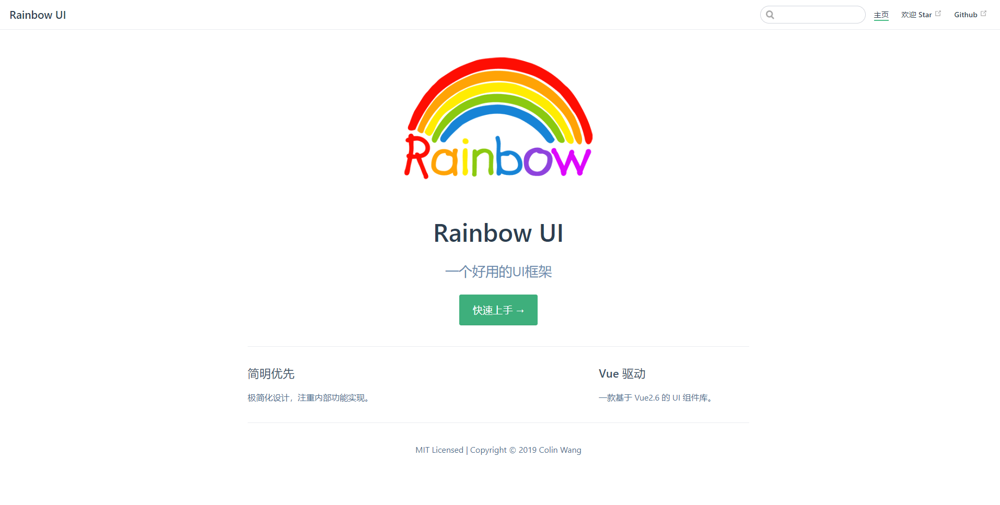
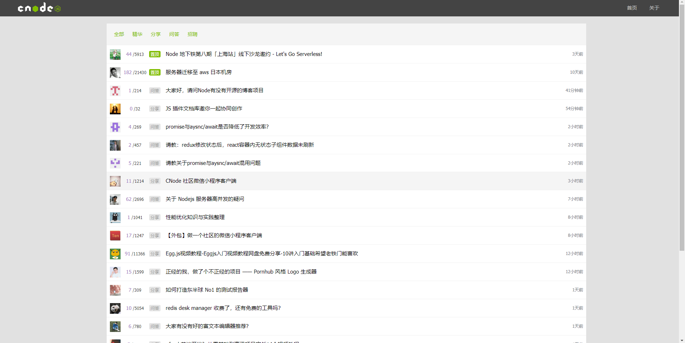
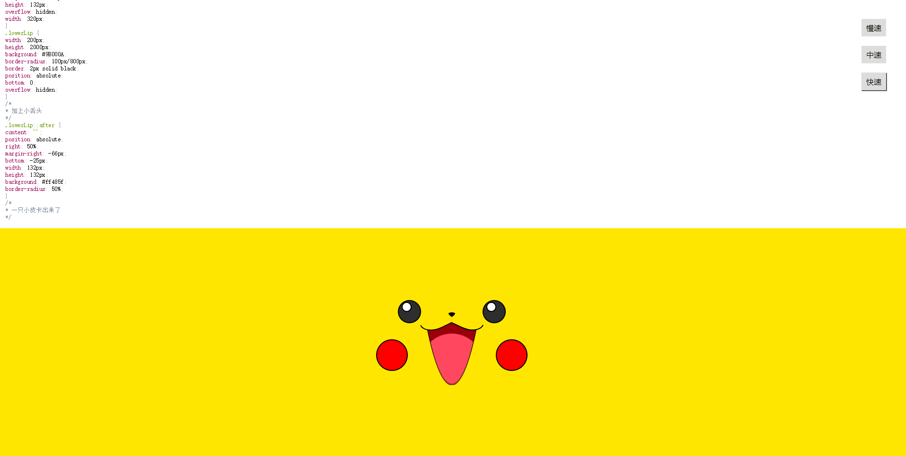
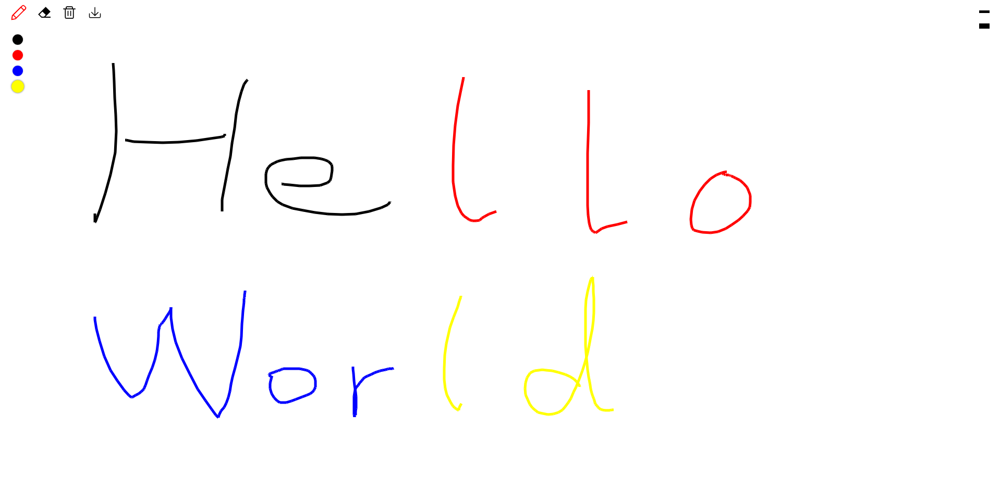

项目经历
Rainbow UI 组件框架
- 项目介绍：该项目是参照 Framework7、Ant Design、Element UI 等 UI 库思路，做的一个基于 Vue 的简易 UI 组件库，目前已支持按钮、输入框、网格、布局、Toast、Tabs等组件。每个组件均经历从需求分析到 Mocha 单元测试，并用 TravisCI 实现持续集成，最终以 VuePress 为基础制作官方文档，发布于 npmjs.org。完成该项目使我对 Vue 的常用特征更加熟悉，同时提升了自己对前端工程化流程以及单元测试重要性的深刻理解，近一步开源文化。
- 技术：Vue.js/ VuePress/ ES6/ Parcel/ Npm Scripts/ Mocha/ SCSS/ TravisCI
- 项目源码：https://github.com/Celty117/rainbow-ui
- 浏览链接：https://colinwang.top/rainbow-ui/
Node.js 社区
- 项目介绍：该项目使用 Vue 还原 CNode 官方社区，项目调用 CNode 官方社区提供的 API，以 Vue CLI 创建项目模版，使用 Axios 获取数据，使用 Vue Router 进行前端路由的切换及传参，使用 watch 监听路由的变化，Webpack 打包。
- 技术栈：Vue CLI/ Vue2/ Vue Router/ Vuex / Axios/ ES6/ Npm/ SCSS
- 项目源码：https://github.com/Celty117/cnode
- 浏览链接：https://colinwang.top/cnode/
小程序：冬宝翻译
- 项目介绍：一款提供翻译功能的微信小程序，遍历有浏览所有翻译历史之意。该项目以百度翻译 API为服务器域名提供支持，主要包含翻译首页、语言列表页和翻译历史页。项目逻辑简单，页面清新，提供了近 20 种语言选择，欢迎尝试。
- 浏览项目：微信搜索小程序——冬宝翻译
皮卡丘
- 项目介绍：是一个使用纯原生 JS 开发的，动态显示 CSS 画一个皮卡丘过程的小作品。该作品主要思路是通过间隔计时器遍历预先设置在 preview 标签内代码，将其一个个显示在页面上，并在 style 标签上作同样处理，以使代码 CSS 生效。此外，实现了 CSS 高亮效果及调速功能。
- 项目源码：https://github.com/Celty117/animate-pikachu
- 浏览链接：https://colinwang.top/animate-pikachu/
简易在线小画板
- 项目介绍：是一个使用纯原生 JS 开发的，主要利用 HTML 5 的 Canvas API ，是我在学习原生 JS 及 Canvas 过程中开发的小工具。 其提供在 PC 及手机端在线画画、橡皮擦、画笔调色、画作删除等功能，并支持画作下载。
- 项目源码：https://github.com/Celty117/painter
- 浏览链接：https://colinwang.top/painter/
关于我
熟练 HTML、DIV + CSS 的页面布局，能根据设计图 像素级完成页面制作
熟悉 HTML 5 及语义化，了解 Canvas 动画制作，掌握CSS 3 动画、过渡效果等常用技术，会使用 Sass CSS语言预处理器熟悉 原生 JavaScript，会使用 ES6 常用规范，了解 jQuery 常用 API 及思想
熟悉 Vue 常用功能，理解如 生命周期、组件、数据响应式等概念，能够使用 Vue 全家桶开发项目
熟悉 模块化、工程化开发流程，能够配置 Webpack
有 移动端开发经验，会使用 REM、vw/ vh、响应式 等技术制作适配手机设备的页面
了解 HTTP 相关知识，了解常见的 Web 性能优化方案
熟练使用 VScode、Git 等开发工具
个人经历
2013 年 7 月毕业于重庆电力高等专科学校，学历大专。
毕业后就职国家电力投资集团，从事电力相关工作。
工作期间接触了前端，发现自己热爱技术，迄今为止利用所有业余时间自学前端近一年。
热爱 coding，享受调试代码及解决 bug 的过程，享受通过各种代码组合实现自己成果的过程。有良好的代码规范，热衷分享，崇尚开源文化。